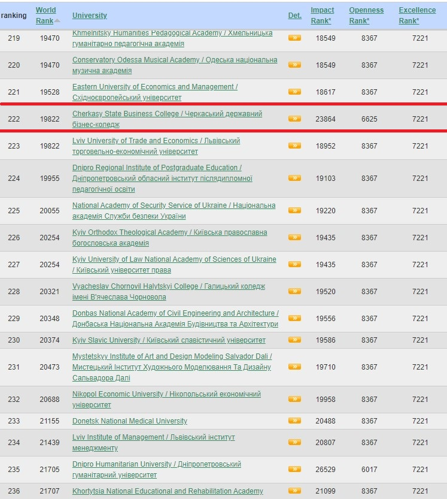

Аналіз позицій ЧДБК в рейтингу Webometrics – січень 2024 Оприлюднена чергова редакція міжнародного рейтингу університетів світу "The Webometrics Ranking of World Universities" (January 2024), в якому представлено 299 закладів вищої освіти України. Черкаський державний бізнес-коледж знову демонструє зростання в рейтингу, піднявшись на 4 позиції та посівши загальне 222 місце (порівняно з 226 у червні 2023 року). Серед вишів Черкащини, бізнес-коледж займає почесне місце у П'ЯТІРЦІ найкращих! Зокрема, за показником «Openness» (або "прозорість" – кількість цитат топ-авторів установи за Google Scholar Citations), тримає ДРУГЕ місце серед університетів Черкащини та 108 місце серед усіх українських університетів. Бізнес-коледж став ДРУГИМ СЕРЕД КРАЩИХ КОЛЕДЖІВ України за версією авторитетного рейтингу.
РЕЙТИНГ
